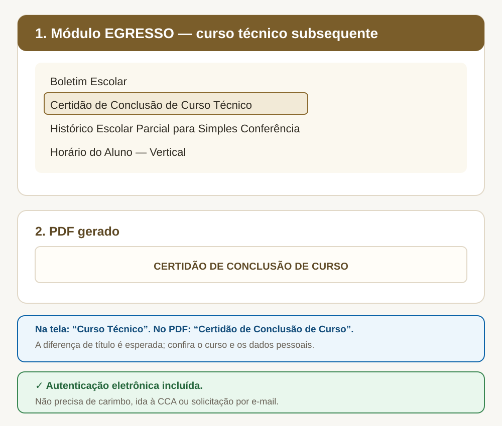

Passo a passo
- Entre no módulo EGRESSO.
- Informe matrícula e senha.
- Abra Solicitar Documentos.
- Clique em Nova Solicitação.
- Escolha Certidão, Histórico Parcial, Boletim ou Horário.
- Clique em Solicitar Documento e baixe o PDF.
Documentos disponíveis
- Boletim Escolar;
- Certidão de Conclusão de Curso Técnico;
- Histórico Escolar Parcial para Simples Conferência;
- Horário do Aluno — Vertical.

Certidão de Conclusão
Uso enquanto os definitivos estão em processamento
A Certidão de Conclusão e o Histórico Escolar Parcial podem ser utilizados para necessidades imediatas enquanto o diploma e o histórico definitivo não ficam disponíveis, observadas as exigências da instituição que receberá os documentos.
Como comprovar a autenticidade
A chave ou o link de validação aparece no próprio documento. A pessoa ou instituição que receber o PDF pode conferir sua autenticidade no módulo VALIDAR DOCUMENTOS do Q-Acadêmico.
Prefere acompanhar tudo em um único arquivo?
O tutorial em PDF reúne as telas e orientações desta página para consulta, impressão ou compartilhamento.
Perguntas frequentes
O título do PDF veio diferente do que selecionei. O documento está errado?
Não. A opção do menu diz “Curso Técnico” e o PDF sai como “Certidão de Conclusão de Curso”. É o comportamento esperado do sistema. O que importa é que o corpo do documento traga corretamente o seu nome, a matrícula e o curso.
Quem emite o diploma do curso técnico?
A expedição do diploma não é atribuição da CCA do campus. O documento é expedido pela Coordenadoria de Registros Acadêmicos (CRA), na Reitoria do IFCE. Para saber o prazo e acompanhar o andamento, consulte a CCA.
O histórico parcial serve como histórico definitivo?
Não. Ele é um documento de conferência e registra a situação como ela está no sistema. O histórico definitivo é entregue junto com o diploma. Verifique com a instituição destinatária qual das versões ela exige.
A empresa exige documento com carimbo. O que faço?
Oriente o destinatário a validar o arquivo no módulo VALIDAR DOCUMENTOS do Q-Acadêmico, informando a chave impressa no PDF. A conferência no sistema oficial substitui o carimbo.